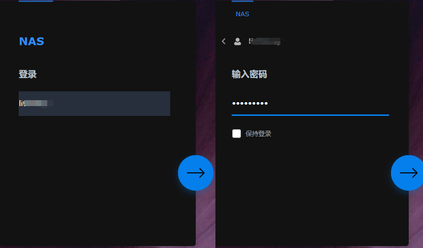
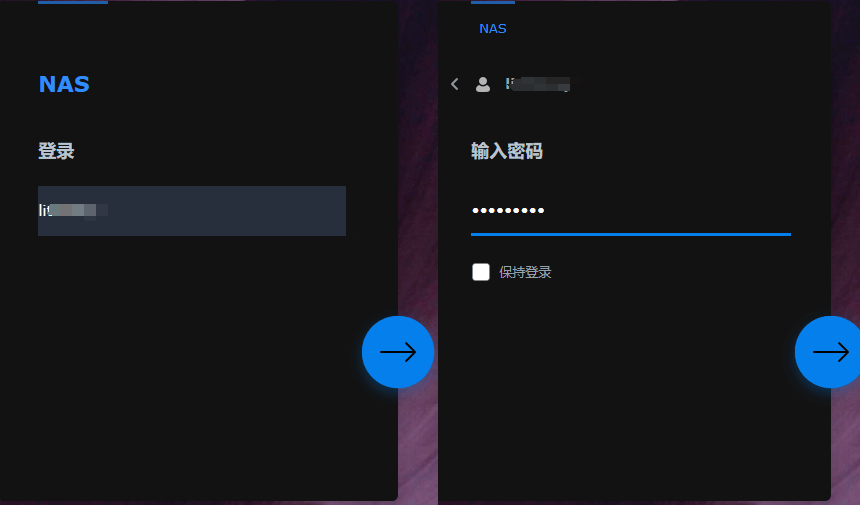

群晖Synology
登录
浏览器端操作
输入IP和端口号，

外网访问可能会收到警告：你的连接不是专用连接，这里点击“高级”，然后继续访问即可。

登录
输入账号密码

参考
pve8.1安装黑群晖 | pve硬盘直通 | 群晖使用nvme做存储空间 | pve安装 | 群晖nas_哔哩哔哩_bilibili
输入IP和端口号，
外网访问可能会收到警告：你的连接不是专用连接，这里点击“高级”，然后继续访问即可。
输入账号密码

pve8.1安装黑群晖 | pve硬盘直通 | 群晖使用nvme做存储空间 | pve安装 | 群晖nas_哔哩哔哩_bilibili